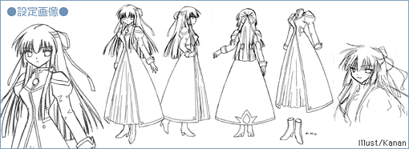
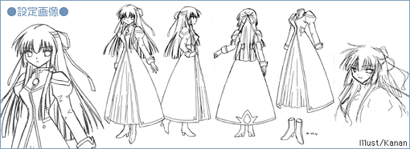

|
||||||||||||||||||||

| ●何为 千岁 |
|
――漫画及游戏方面（GA） 『Monnlit Lovers』的故事之后，新配属的天使队的新成员。以首席身份毕业于名门士官学校的优秀人才。情报分析能力非常高，受到军方高层的重视。既是努力家，性格也非常认真，因此缺乏灵活性。由于是千金小姐，也有天然呆的一面。 喜欢的食物是和果子。 ――动画方面（GA） 并非天使队的一员，而是她们（？）的对手。与游戏中温柔认真的性格相反，展现出天然腹黑的一面。 |
© BROCCOLI

|
|||||||||||||||||||||||||||||||||
|
© BROCCOLI |
|||||||||||||||||||||||||||||||||